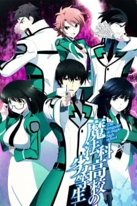

The Irregular at Magic High School

Géneros: Fantasía, Romance, Comedia, Ciencia Ficción, Accion.
Idioma: Español.
Sinopsis:
La «magia» no es un producto de leyendas ni de cuentos de hadas. Se ha convertido en una tecnología real desde hace ya casi un siglo. La crianza en varios países del Mundo está enfrascada a la carrera de «Magos». Shiba Tatsuya es un honorable estudiante sin habilidad mágica cursando secundaria, una secundaria mágica junto con su hermana menor, que pasa a ser la mejor entre los estudiantes de primer año. ¿Qué le pasará a Shiba? ¿Cómo vivirá su vida escolar en la cual él es uno de los muchos «reservas» que son mirados hacia abajo por los «Blooms»?
Lista de capítulos
Volumen 1
Ceremonia de entrada
Capitulo 1: Ceremonia de entradaEl templo
Capitulo 2: El temploEl consejo estudiantil
Capitulo 3: El consejo estudiantil